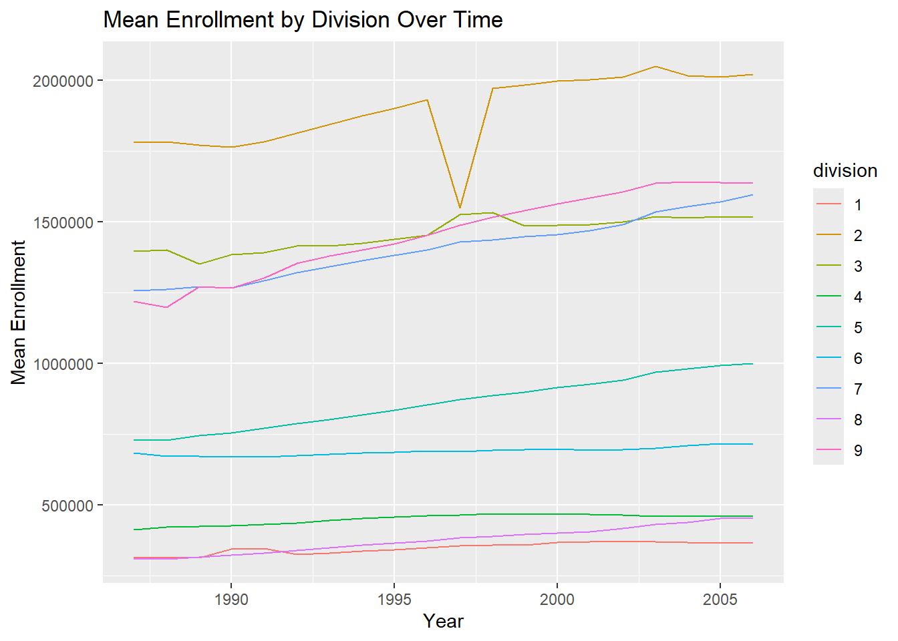
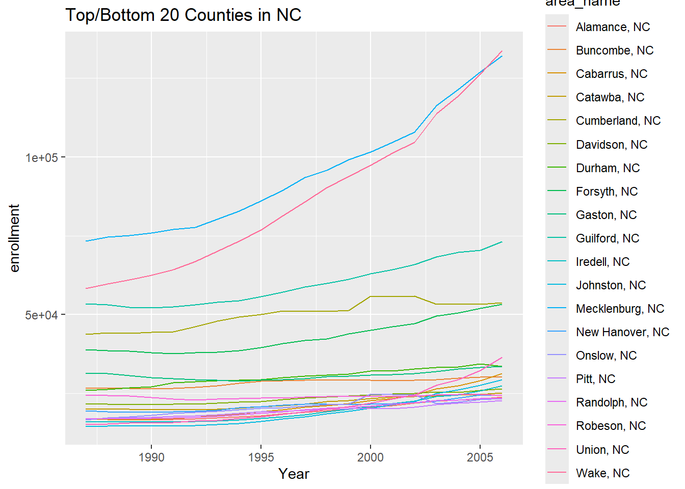
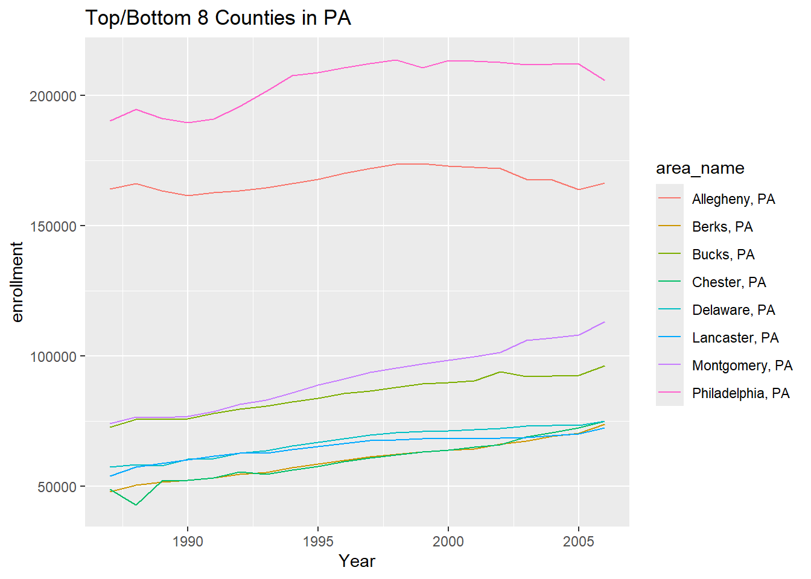
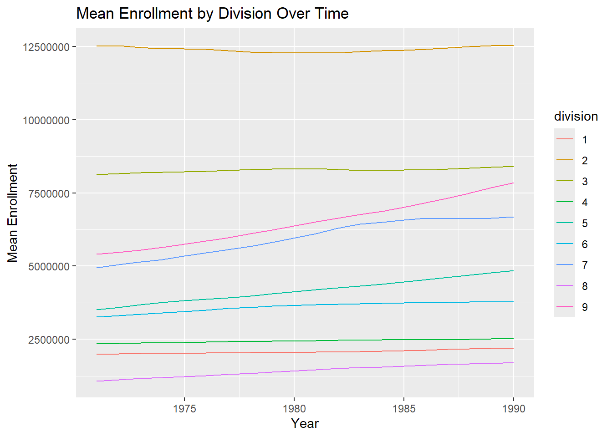
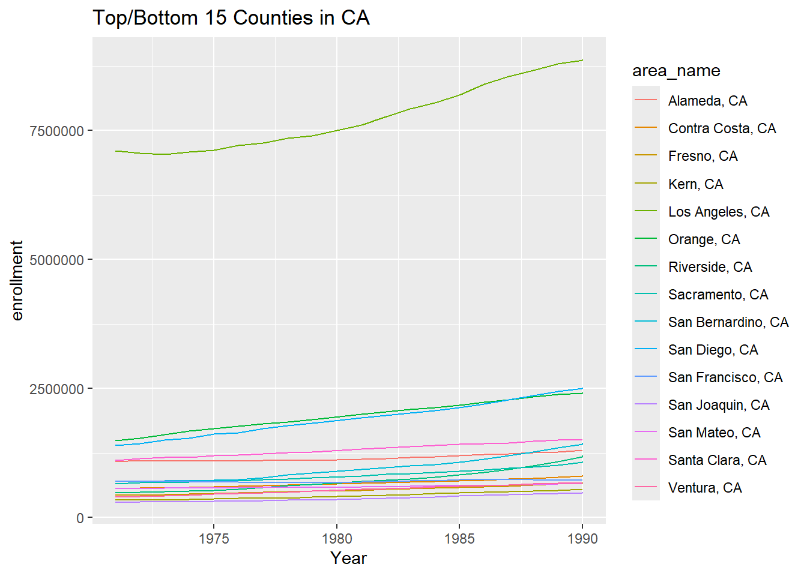

The follow code chunks were written to execute steps 1 - 6 from the data processing section in preparation for creating the functions that will be utilized in the data processing. These chunks do not execute (with the exception of the first) and are only included to display how the functions were developed prior to their actual creation.
This first chunk’s purpose is to load all libraries that are used though out the document. The tidyverse is the only library used and thus is the only statement within the chunk.
#read in tidyverse library(tidyverse)
── Attaching core tidyverse packages ──────────────────────── tidyverse 2.0.0 ──
✔ dplyr 1.1.4 ✔ readr 2.1.5
✔ forcats 1.0.0 ✔ stringr 1.5.1
✔ ggplot2 3.5.1 ✔ tibble 3.2.1
✔ lubridate 1.9.3 ✔ tidyr 1.3.1
✔ purrr 1.0.2
── Conflicts ────────────────────────────────────────── tidyverse_conflicts() ──
✖ dplyr::filter() masks stats::filter()
✖ dplyr::lag() masks stats::lag()
ℹ Use the conflicted package (<http://conflicted.r-lib.org/>) to force all conflicts to become errors
This next chunk is the thought process for reviewing data that will be read in and changing names as applicable. First the chunk reads in a comma separated file from the provided website and stores it as a tibble named “raw_DF”. Next, the variable “Area_name” was changed, using the rename function, “to area_name”. Finally, the variables area_name, STCOU, and all variables that end with “D” are selected and stored in a new tibble.
#create tibble from data on websiteraw_DF <-as.tibble(read.csv("https://www4.stat.ncsu.edu/~online/datasets/EDU01a.csv"))cleaned_DF<- raw_DF|>#rename columnrename("area_name"="Area_name")|>#select only instructed columnsselect(area_name, STCOU, ends_with("D"))
The next chunk takes the “cleaned_DF” and changes it from a wide table to a long table using the pivot_longer function. It’s output results in every area_name having one observation.
This chunk takes our new long table tibble and adds a numeric year variable using the mutate and substr functions. Substr looks at the Info variable (which has a fixed length of 10) and pulls out the characters at positions 8 through 9. The as.numeric coerses those characters into numbers which are then assigned to the year variable. The next mutate statement takes that 2 digit year and creates a 4 digit year using the if_else statement. Since our data only includes observations AFTER 1986 the statement compares if the value of year is greater than or less than 24, our current 2 digit year. If the value is less than 24 than it uses paste0 to concatinate the characters “19” with the value in year then changes that resulting 4 character string to a numeric 4 digits. If the value is greater than 24 then the same operation is conducted with the characters “200” in the place of “19”. The results give us 4 digit years. The following mutate statement removes the last 3 digits from the Info observation, then the rename function changes the name of the “value” variable to “enrollment”. The final select statement reorganizes the variables for legibility.
#add year variablenew_df<- new_df|>mutate(year =as.numeric(substr(Info,8,9)))|>#use when() statement to create 4 digit yearmutate(year =if_else(year>24,as.numeric(paste0("19",year)),as.numeric(paste0("200",year))))|>#change info to equal the 7 character educational codemutate(Info =substr(Info,1,7))|>rename(enrollment = value)|>#arrange Variables for better visualselect(area_name, STCOU, Info, year, enrollment)
Divide into 2 datasets
#find indices of observations that belong in county data setx<-grep(pattern =", \\w\\w",new_df$area_name)#create county data setcounty_df<- new_df[x,]#create non-county datasetnonCounty_df<- new_df[-x,]#check if county dataset and noncounty dataset combine have same number of rows as new_df#i.e. check if any rows were lostnrow(county_df)+nrow(nonCounty_df) ==nrow(new_df)#add class to datasetsclass(county_df)<-c("county", class(county_df))class(nonCounty_df)<-c("non-county", class(nonCounty_df))#checkclass(county_df)class(nonCounty_df)
Create states in county data set
#add State variable to county data setcounty_df<- county_df|>#adds state variable using substr. substr takes area_name as the vector, uses nchar to count number of characters in area_name and subtracts 2 to find where to start, uses nchar to find last char positionmutate("state"=substr(area_name, nchar(area_name)-2, nchar(area_name)))|>#rearrange variablesselect(area_name, state, STCOU, Info, year, value)
rename_and_select <-function(raw_df){ pass_df<-raw_df|>#rename columnrename("area_name"="Area_name")|>#select only instructed columnsselect(area_name, STCOU, ends_with("D"))return(pass_df)}
function2
create_longer_w_year<-function(pass_df){#create new tibble passed_df <-pivot_longer(pass_df,names_to ="Info",cols =ends_with("D"))#add year to tibble passed_df<- passed_df|>#rename value to enrollmentrename(enrollment = value)|>mutate(year =as.numeric(substr(Info,8,9)))|>#change 2 digit year to 4 digit yearmutate(year =if_else(year>24, as.numeric(paste0("19",year)),as.numeric(paste0("200",year)))) passed_df<-passed_df|>#change info to equal the 7 character educational codemutate(Info =substr(Info,1,7))|>#arrange Variables for better visualselect(area_name, STCOU, Info, year, enrollment)return(passed_df) }
function 3
create_state_var<-function(county_df){#add State variable to county data set county_df<- county_df|>#adds state variable using substr. substr takes area_name as the vector, uses nchar to count number of characters in area_name and subtracts 2 to find where to start, uses nchar to find last char positionmutate("state"=substr(area_name, nchar(area_name)-2, nchar(area_name)))|>#rearrange variablesselect(area_name, state, STCOU, Info, year, enrollment)return(county_df) }
split_tibbles<-function(pass_df){#find indices of observations that belong in county data set x<-grep(pattern =", \\w\\w",pass_df$area_name)#create county data set county_df<- pass_df[x,]|>create_state_var()#create non-county dataset nonCounty_df<- pass_df[-x,]|>create_division_var()#add class to datasetsclass(county_df)<-c("county", class(county_df))class(nonCounty_df)<-c("non_county", class(nonCounty_df))#return data setsreturn(list(county_df, nonCounty_df))}
# A tibble: 530 × 6
area_name STCOU Info year enrollment division
<chr> <int> <chr> <dbl> <int> <chr>
1 UNITED STATES 0 EDU0101 1987 40024299 ERROR
2 UNITED STATES 0 EDU0101 1988 39967624 ERROR
3 UNITED STATES 0 EDU0101 1989 40317775 ERROR
4 UNITED STATES 0 EDU0101 1990 40737600 ERROR
5 UNITED STATES 0 EDU0101 1991 41385442 ERROR
6 UNITED STATES 0 EDU0101 1992 42088151 ERROR
7 UNITED STATES 0 EDU0101 1993 42724710 ERROR
8 UNITED STATES 0 EDU0101 1994 43369917 ERROR
9 UNITED STATES 0 EDU0101 1995 43993459 ERROR
10 UNITED STATES 0 EDU0101 1996 44715737 ERROR
# ℹ 520 more rows
print(list1[[3]])
# A tibble: 31,450 × 6
area_name state STCOU Info year enrollment
<chr> <chr> <int> <chr> <dbl> <int>
1 Autauga, AL " AL" 1001 EDU0101 1997 8099
2 Autauga, AL " AL" 1001 EDU0101 1998 8211
3 Autauga, AL " AL" 1001 EDU0101 1999 8489
4 Autauga, AL " AL" 1001 EDU0102 2000 8912
5 Autauga, AL " AL" 1001 EDU0102 2001 8626
6 Autauga, AL " AL" 1001 EDU0102 2002 8762
7 Autauga, AL " AL" 1001 EDU0152 2003 9105
8 Autauga, AL " AL" 1001 EDU0152 2004 9200
9 Autauga, AL " AL" 1001 EDU0152 2005 9559
10 Autauga, AL " AL" 1001 EDU0152 2006 9652
# ℹ 31,440 more rows
print(list1[[4]])
# A tibble: 530 × 6
area_name STCOU Info year enrollment division
<chr> <int> <chr> <dbl> <int> <chr>
1 UNITED STATES 0 EDU0101 1997 44534459 ERROR
2 UNITED STATES 0 EDU0101 1998 46245814 ERROR
3 UNITED STATES 0 EDU0101 1999 46368903 ERROR
4 UNITED STATES 0 EDU0102 2000 46818690 ERROR
5 UNITED STATES 0 EDU0102 2001 47127066 ERROR
6 UNITED STATES 0 EDU0102 2002 47606570 ERROR
7 UNITED STATES 0 EDU0152 2003 48506317 ERROR
8 UNITED STATES 0 EDU0152 2004 48693287 ERROR
9 UNITED STATES 0 EDU0152 2005 48978555 ERROR
10 UNITED STATES 0 EDU0152 2006 49140702 ERROR
# ℹ 520 more rows
# A tibble: 62,900 × 6
area_name state STCOU Info year enrollment
<chr> <chr> <int> <chr> <dbl> <int>
1 Autauga, AL " AL" 1001 EDU0101 1987 6829
2 Autauga, AL " AL" 1001 EDU0101 1988 6900
3 Autauga, AL " AL" 1001 EDU0101 1989 6920
4 Autauga, AL " AL" 1001 EDU0101 1990 6847
5 Autauga, AL " AL" 1001 EDU0101 1991 7008
6 Autauga, AL " AL" 1001 EDU0101 1992 7137
7 Autauga, AL " AL" 1001 EDU0101 1993 7152
8 Autauga, AL " AL" 1001 EDU0101 1994 7381
9 Autauga, AL " AL" 1001 EDU0101 1995 7568
10 Autauga, AL " AL" 1001 EDU0101 1996 7834
# ℹ 62,890 more rows
combined_data$non_county
# A tibble: 1,060 × 6
area_name STCOU Info year enrollment division
<chr> <int> <chr> <dbl> <int> <chr>
1 UNITED STATES 0 EDU0101 1987 40024299 ERROR
2 UNITED STATES 0 EDU0101 1988 39967624 ERROR
3 UNITED STATES 0 EDU0101 1989 40317775 ERROR
4 UNITED STATES 0 EDU0101 1990 40737600 ERROR
5 UNITED STATES 0 EDU0101 1991 41385442 ERROR
6 UNITED STATES 0 EDU0101 1992 42088151 ERROR
7 UNITED STATES 0 EDU0101 1993 42724710 ERROR
8 UNITED STATES 0 EDU0101 1994 43369917 ERROR
9 UNITED STATES 0 EDU0101 1995 43993459 ERROR
10 UNITED STATES 0 EDU0101 1996 44715737 ERROR
# ℹ 1,050 more rows
Plotting Functions
# Plot state functionplot.state <-function(df, var_name ="enrollment") { df <- df %>%filter(division !="ERROR") %>%group_by(year, division) %>%summarize(mean_value =mean(.data[[var_name]], na.rm =TRUE), .groups ='drop')ggplot(df, aes(x = year, y = mean_value, color = division)) +geom_line() +labs(title ="Mean Enrollment by Division Over Time",x ="Year",y ="Mean Enrollment")}
# Plot county functionplot.county <-function(df, state_var =NULL, group ="top", number =5, var_name ="enrollment") {if (!is.null(state_var)) {#created a new variable for legibility new_df <- df %>%#this line removes a space that is being added into every observation of the state varmutate(state =substr(state, nchar(state)-1, nchar(state)))%>%filter(state == state_var) }else{ new_df<-df } summary_df <- new_df %>%group_by(area_name) %>%summarize(mean_value =mean(.data[[var_name]], na.rm =TRUE), .groups ='drop') %>%arrange(if (group =="top") desc(mean_value) else mean_value) %>%slice_head(n = number) plot_df <- df %>%filter(area_name %in% summary_df$area_name)ggplot(plot_df, aes(x = year, y = .data[[var_name]], color = area_name)) +geom_line() +labs(title =paste("Top/Bottom", number, "Counties in", state_var),x ="Year",y = var_name)}
Putting it Together
# URLs of datasets# urls <- c(# "https://www4.stat.ncsu.edu/~online/datasets/EDU01a.csv",# "https://www4.stat.ncsu.edu/~online/datasets/EDU01b.csv"# )# # Process data# data_list <- lapply(urls, process_data)# # # Combine data# combined_data <- combine_data(data_list)# Plot state dataplot.state(combined_data$non_county, var_name ="enrollment")

# Plot county data with different parametersplot.county(combined_data$county, state_var ="NC", group ="top", number =20, var_name ="enrollment")

plot.county(combined_data$county, state_var ="SC", group ="bottom", number =7, var_name ="enrollment")
plot.county(combined_data$county, state_var ="PA", group ="top", number =8, var_name ="enrollment")

# Additional URLs for further processingadditional_urls <-c("https://www4.stat.ncsu.edu/~online/datasets/PST01a.csv","https://www4.stat.ncsu.edu/~online/datasets/PST01b.csv","https://www4.stat.ncsu.edu/~online/datasets/PST01c.csv","https://www4.stat.ncsu.edu/~online/datasets/PST01d.csv")# Process additional dataadditional_data_list <-sapply(additional_urls, my_wrapper)# Combine additional datacombined_additional_data <-combine_data_sets(additional_data_list)# Plot additional state dataplot.state(combined_additional_data$non_county, var_name ="enrollment")

# Plot additional county data with different parametersplot.county(combined_additional_data$county, state_var ="CA", group ="top", number =15, var_name ="enrollment")

plot.county(combined_additional_data$county, state_var ="TX", group ="top", number =4, var_name ="enrollment")